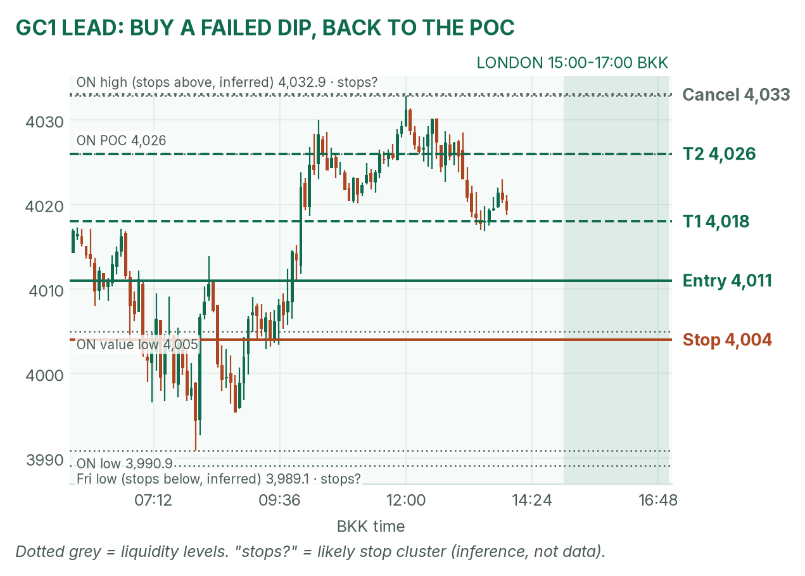
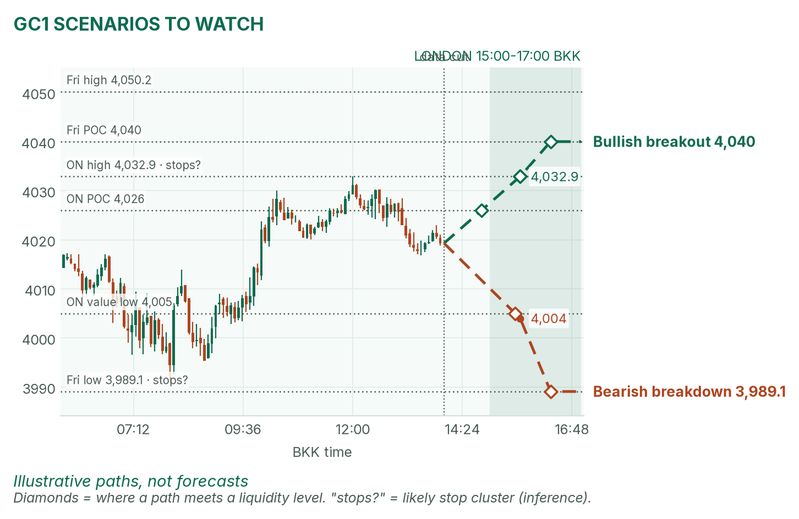
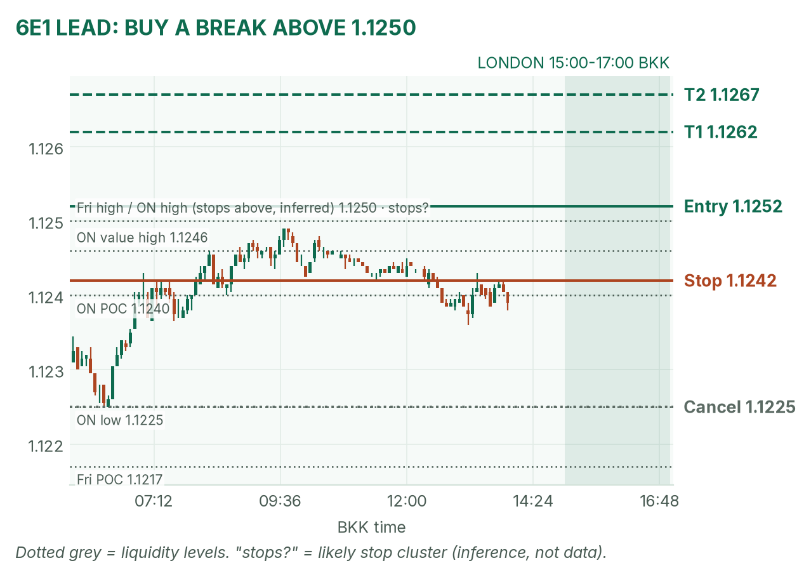
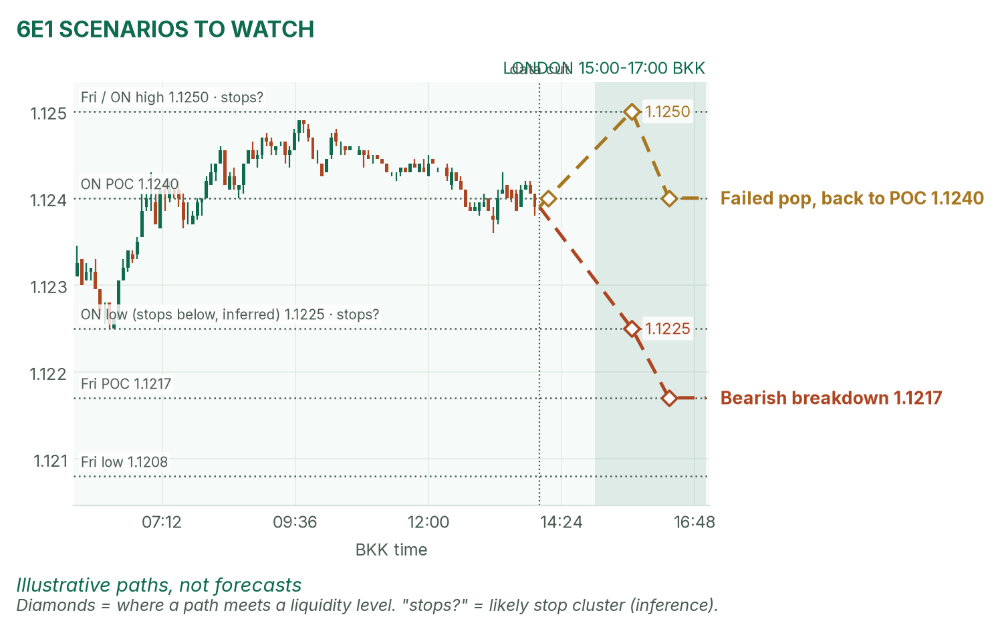

Gold is resting above 4,000. The euro is pinned under 1.1250 before the Ifo.
Window 15:00–17:00 BKK (UK clocks went back: one hour later than last week). Data cut 14:00 BKK: GC 4,019.3, 6E 1.1239 (TopstepX Z26, last complete 5m bar). Levels only. Ideas, not advice.
Summary
GC: buy a dip to 4,011 that fails to break 4,005. Stop 4,004, target 4,026 (2.1R). About 40%.
6E: buy a 5-minute close above 1.1250 and the 15:00–15:30 range high. Stop 1.1242, target 1.1267 (1.5R). About 36%.
Germany's Ifo survey lands at 16:00, inside the window. No entries 15:55–16:02.
Flat by 17:00, no matter what.
The market story
Gold had its worst week since June, closing Friday at 4,010. Overnight it dipped to 3,990.9 at 08:00, then bounced to 4,032.9 by noon and is now drifting at 4,019. No new US strike on Iran over the weekend, so Brent oil eased 1.7% to about $115. Cheaper oil means less inflation fear, so traders expect fewer interest-rate hikes. That helps gold, which pays no interest, so lower rates make holding it cheaper.
The euro is boxed: 1.1225–1.1249 overnight, with Friday's high at 1.1250 right on top. The dollar is a touch softer. With the Fed and ECB due Thursday, Monday ranges tend to stay tight; a break needs the Ifo or an Iran headline.
How I read it: gold is bouncing inside a downtrend and will likely swing around its busiest price; the euro is a lid waiting to be tested.
News (BKK)
Time
Event
Forecast
Prior
Read
16:00
Germany Ifo business climate (a monthly poll of German firms)
90.1
89.9
Hot (above about 90.5) supports a 6E break up; cold (under 89.9) favours the downside. Small for gold.
Any time
Iran headlines
n/a
n/a
A strike lifts oil and gold and hits the euro. Unscheduled.
No-trade zone: 15:55–16:02. Typical Ifo move size not measured; I have no verified release history.
Levels to watch
Level
GC
6E
Overnight high
4,032.9
1.1249
Overnight value area (where 70% of trading happened)
4,005–4,030
1.1238–1.1246
Overnight POC (busiest price)
4,026
1.1240
Overnight low
3,990.9
1.1225
Friday high / low
4,050.2 / 3,989.1
1.1250 / 1.1208
Friday POC
4,040
1.1217
Typical window range (median / 80th pct, 20 days)
17 / 22 pts
20 / 31 pips
Gold (GC1)
Bias: neutral to slightly up for the next two hours, inside a bigger downtrend. My London gold rule fades the edges of the 15:00–15:30 range back to the POC. Price sits below the POC, so I want the bottom edge.
The trade: buy a failed dip
Entry
4,010–4,012 (plan 4,011): a dip under the 15:00–15:30 range that holds above the overnight value low (4,005) on a 5m close
Stop
4,004: below the value low.
Targets
1R partial 4,018 · full target 4,026, the overnight POC (2.1R)
Cancel
Price trades above 4,033 before entry, the dip comes inside 15:55–16:02, or no fill by 16:15
Probability
~40%, an estimate. Basis: London gold ranges mostly failed and snapped back toward the POC in my Aug–Oct study (not significant); 15 points to target is just under a typical window.
Why: buy where sellers already failed, aiming for the busiest price. No dip, no trade. I won't chase 4,019. April agrees: she wants gold to hold 3,990.9 to extend the bounce.

GC 5-minute bars to 14:00 BKK, window shaded. The 3,990.9 flush and the 4,033 ceiling frame the day.

Illustrative paths, not forecasts: the breakout and breakdown at the liquidity levels.
Scenarios to watch
Bullish breakout: two 15m closes above 4,032.9 run the stops above it. Aims for 4,040, Friday's POC.
Bearish breakdown: a 15m close below 4,004. Aims for 3,989–3,991, the Friday and overnight lows.
Euro (6E1)
Bias: mildly up. A softer dollar leans euro-positive, and price hugs the top of its box. My London rule for 6E is to trade breaks of the 15:00–15:30 range.
The trade: bullish range breakout
Entry
1.1251–1.1253 (plan 1.1252), on a 5m close above the 15:00–15:30 range high and 1.1250
Stop
1.1242: back inside the overnight value area, near its POC
Targets
1R partial 1.1262 · full target 1.1267 (1.5R)
Cancel
Price trades 1.1225 before entry, the break comes inside 15:55–16:02, or a cold Ifo
Probability
~36%, an estimate. Basis: euro London breakouts averaged +0.31R in my study (26 sessions, not significant); 15 pips to target is about three quarters of a typical window.
Why: buy stops likely sit above the matching 1.1250 highs (an inference), and a break feeds on them. April half-agrees: she sees a softer dollar but frames the Ifo as able to break it either way. If 1.1250 breaks and closes back under within 15 minutes, get out.

6E 5-minute bars to 14:00 BKK. A 24-pip overnight box with 1.1250 as the lid.

Illustrative paths, not forecasts: breakdown and failed pop.
Scenarios to watch
Bearish breakdown: a 5m close below the range low and 1.1225 on a cold Ifo. Aims for 1.1217, Friday's POC.
Failed pop: a poke above 1.1250 that closes back under it. Aims for 1.1240, the overnight POC.
NQ (not traded in London): 29,084, near the overnight low 29,027.50.
Before you click
ORB bases. GC London: 15:00–15:30 range, fade to POC. 6E London: 15:00–15:30 range, trade breakouts.
Checklist. 1) Room to today's max loss? 2) Within daily rules? 3) No release within 30 minutes? 4) Agrees with the bias? 5) At a marked level? 6) Setup tagged? 7) Entry, stop, 1R partial, target set? 8) Calm, not chasing?
Reset (60 seconds). Breathe in 4, hold 4, out 6, five times. Name the feeling in one word. Say the plan aloud. "Eager" or "frustrated"? Wait 5 minutes.
TopstepX Z26 bars, read-only; overnight starts 05:00 BKK. Macro, calendar and forecasts: April's pre-London brief (Ifo forecast via MarketScreener/Dow Jones).